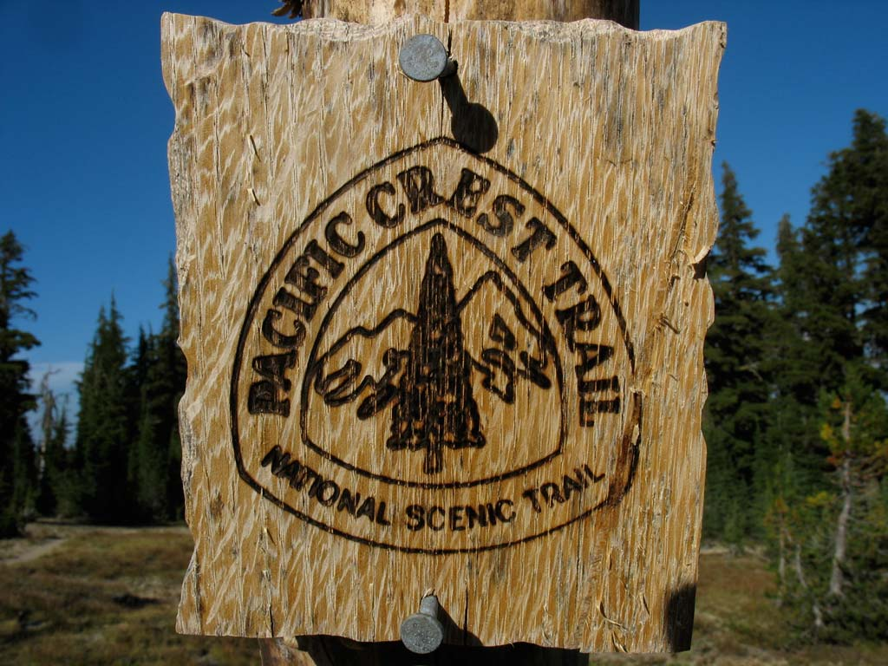
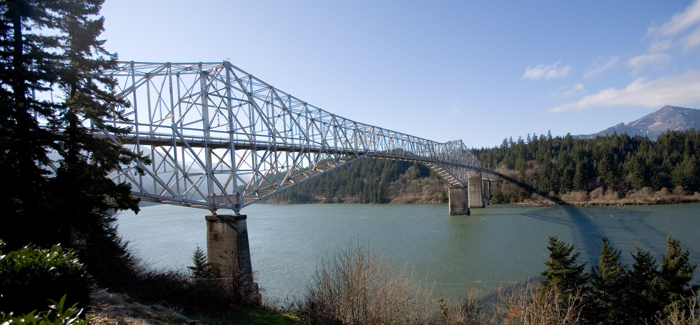
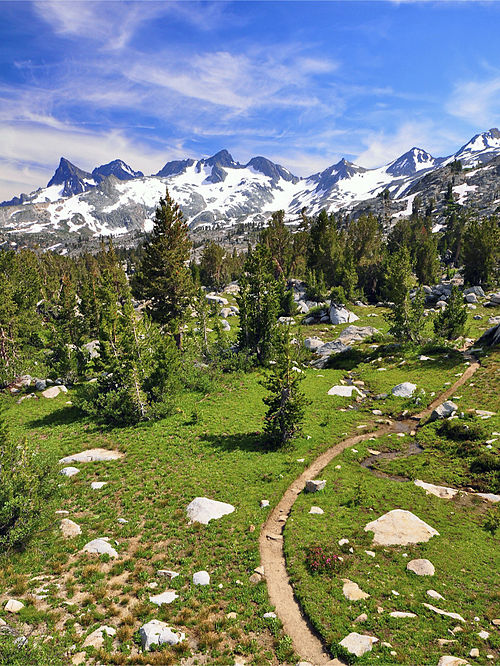

This commemorative map was created for Craggy Cartographers, a hiking club for old mappers using a classic map from Erwin Raisz. “Erwin Josephus Raisz (1893-1968), widely considered one of the last and best exponents of the pen-and-ink school, had both feet firmly planted in the pre-digital era. In many ways the techniques he practiced have been superseded. Leroy sets, bottles of India ink, and protractors now gather dust in the file cabinets of mapmakers who learned their craft in the 1950s and 1960s. But the essence of his method, his teaching, and his example continues to constitute a rich legacy for cartographers working in any medium.” [Source: Plainly Visible Patterns: The Cartography of Erwin Josephus Raisz in Mercator’s World].
The map shows the Pacific Crest Trail (PCT) with data acquired from the USDA Forest Service. The PCT was designated as a National Scenic Trail in 1968. It is approximately 2,650 miles long.
 The Bridge of the Gods from Cascade Locks, Oregon.
Devil's Postpile in California.
Ritter Ridge in California.
Map data acquired from USDA Forest Service, www.raiszmaps.com, and Natural Earth. Software used: QGIS3.12 on MacOS 10.14. Projection: North American Albers Equal Area.
University of Kentucky New Maps Plus, Spring 2020.